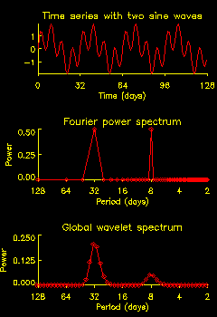

Bias of the Global Wavelet Spectrum
Significance levels for wavelet phase differences
Orthogonal, orthonormal, and nonorthogonal, and the Morlet
Padding with zeroes up to a power-of-two
Significance Levels: Do they mean anything?
If I have several realizations of a time series, is it okay to average
the wavelet power spectra together?
Usually, it is NOT okay to average different wavelet power spectrum (WPS) together. The whole purpose of wavelet analysis is to see the time-frequency distribution, i.e. how the power changes over time. If you have different realizations of a time series (drawn from the same distribution, but independent of each other), then the WPS should have a similar structure, but the location of individual regions of high power will be different for each WPS. Averaging them together will then destroy the information of where the regions of high power are located, and will return only the average distribution of power versus scale (if this is all you are interested in, then you are better off using Fourier analysis).

I notice that if I have a time series with
two sine waves of the same amplitude but different frequency,
then in the Fourier power spectrum they have the same power, but
in the global wavelet spectrum the higher-frequency peak is much smaller
than the lower-frequency peak.
That's correct, and it's due to the width of the wavelet filter in Fourier space. At small wavelet scales (high frequency), the wavelet is very broad in frequency, therefore any peaks in the spectrum get smoothed out. At large wavelet scales, the wavelet is more narrow in frequency, therefore the peaks are sharper and have a larger amplitude.If you want it in mathematical terms, the global wavelet spectrum is an "efficient" estimator of the "true" power spectrum, but it is also "biased". The bias means that there may be a large difference between the global wavelet spectrum and the "true" Fourier spectrum.
So, if you have sharp peaks in your power spectrum, don't use the global wavelet spectrum to determine the relative magnitude of your peaks.
How do I compute significance levels for the wavelet
phase difference of two time series?
The phase angle should be distributed "uniformly" between -180° and +180°. You can't really do a significance test since there is no ``preferred'' value (e.g. for wavelet power the preferred value is the background spectrum). But what you can do is a ``confidence interval'' about your actual phase differences. If the 95% confidence interval doesn't overlap zero, then you can be confident that the phase difference is significant.By the Central Limit Theorem, if X1, X2,... are independent random variables with finite mean m and variance s2, then the average of X1 + X2 + ... + Xn is normally distributed with mean m and variance s2/n. The uniform distribution for the interval [a,b] has m=0.5(a+b) and s2=(b-a)2/12. By the Central Limit Theorem, the average of n phase angles (interval [-Pi,+Pi]) is normally distributed with m=0 and s2=4 Pi2/12n.
The 95% confidence interval for the average of n phase angles is ±1.96 s = ±1.96 (2 Pi) (12n)-½. In degrees this is ±204° n-½.
Despite the above discussion (given for background only), for the wavelet phase difference it is difficult to determine the "effective" number of variables n since they are not independent. In this case it is better to use a Monte Carlo method where you take your two signals and add random noise to each of them. By repeating this say a 1000 times you can compute the 95% confidence interval about your ``true'' phase difference.
What's the difference between orthogonal, orthonormal, and nonorthogonal?
And, is the Morlet wavelet orthogonal?
To be orthonormal, a set of wavelet functions must be complete (i.e. you have to have enough of them), and each must be orthogonal to the others (i.e. no overlap or projection). The "normal" part just means that each wavelet is normalized to have total energy of 1.0.For the Morlet wavelet, there are two possibilities:
- the continuous wavelet transform: here you are sliding the wavelet along your time series. Therefore, each wavelet overlaps the ones next to it, which gives lots of redundant information. This is NOT orthogonal.
- the discrete wavelet transform: here you skip along the time series, only doing the wavelet transform where the wavelet no longer overlaps the previous ones.
- For the Morlet wavelet, this is approximately orthogonal, but not exactly. Due to the extended tails of the Gaussian, it is not possible to construct a truly orthogonal set for the Morlet.
- For other wavelets such as the Daubechies, it is possible to construct an exactly orthogonal set.
So the moral is: if you want to do the continuous wavelet transform, then you aren't worried about orthogonality, and you can use the Morlet. If you want to do the discrete wavelet transform, don't use the Morlet.
For the continuous wavelet transform there will be problems near the edge of the time series, as the wavelet starts to run off the end. To minimize these problems, the time series can be padded with zeroes. This reduces the wavelet power near the edges, but it avoids wrap-around effects.It is useful to pad up to a power-of-two (such as 1024), as this makes the Fourier transform (FFT) go faster. In the above example with 511 points, padding up to 512 points (i.e. adding one zero to the end) will make the FFT faster, but will not help at all with the edge effects, especially at the largest scales. Therefore, one should pad with 513 zeroes to make a total of 1024 points.
The scale refers to the width of the wavelet. As the scale increases and the wavelet gets wider, it includes more of the time series, and the finer details get smeared out. The scale can be defined as the distance between oscillations in the wavelet (e.g. for the Morlet), or it can be some average width of the entire wavelet (e.g. for the Marr or Mexican hat).The period (or inverse frequency) is the approximate Fourier period that corresponds to the oscillations within the wavelet. For all wavelets, there is a one-to-one relationship between the scale and period. The relationship can be derived by finding the wavelet transform of a pure cosine wave with a known Fourier period, and then computing the scale at which the wavelet power spectrum reaches its maximum.
For some wavelets the period has more meaning than others. For the Morlet, which has several smooth oscillations, the period is a well-defined quantity which measures the approximate Fourier period of the signal. For the Daubechies, which has irregularly-spaced oscillations, the period has less meaning and should probably be ignored.
Just like any significance test, the 5% significance level (95% confidence level) implies that for a random time series, 5% of the points will be above that threshold just by chance. Therefore, the 5% contours on a wavelet plot must be interpreted carefully.You need to look at:
Both of these are subjective measures. In Fourier analysis one has the same problem: do you have a single peak that barely goes above the 5% level (in which case it could be spurious), or do you have a broad peak that is well above the significance level?
- how large are the 5% regions compared to that expected by chance?
- are the 5% regions distributed randomly or with some pattern?
The following approach might be helpful:
- Look at your time series with Fourier analysis, to see if there are any interesting peaks (you may already know this without having to do the Fourier).
- Look at the wavelet power spectrum, and concentrate your attention within the scale range where you have peaks. Look for any signs of "nonstationarity". There are two main things to look for:
Amplitude modulation: Is the wavelet power clumped together during certain intervals?
Frequency modulation: Does the period change with time?
The 5% regions will then help you determine whether this is a significant result or not.